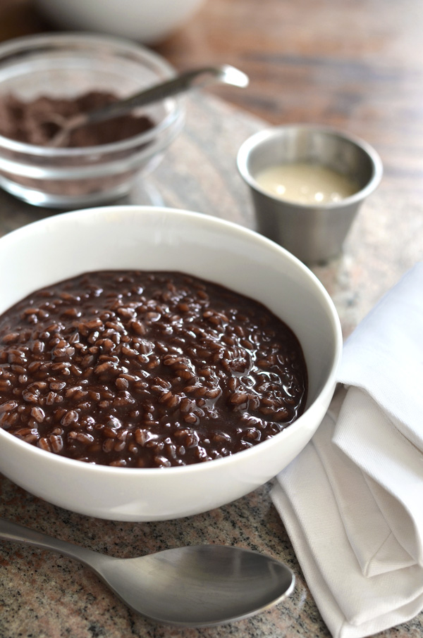

Chocolate Rice Pudding

Description
There is a Philippino desert dish known as Champorado, which this dish is similar to. It consists of white rice, milk, sweetener, and chocolate, essentially. This version of the recipe is particularly simple and can be prepared in a microwave, assuming you already have cooked white rice - which you must.
The sweetener can be either honey or sugar. You can use dairy milk or plant milk according to your preferences. Use chocolate as dark as you like. I will write out the recipe using honey and almond milk (unsweetened), but feel free to substitute as desired.
Ingredients
- 1.5 cups cooked stickywhite rice
- 1.25 tbsp honey
- 1/2 - 2/3 cups unsweetened almond milk
- 12.5g dark chocolate
- Pinch of salt
Steps
- Place the rice, almond milk, and salt in a dish. Break up the rice using a spoon. Place in the microwave for 90 seconds.
- Remove the dish from the microwave and add your sweetener. Mix the dish and return it to the microwave.
- Heat the dish in 90 second intervals, removing it after each interval to check the thickness of the dish. The contents are done when their is no standing milk remaining in the dish.
- Break the chocolate into little pieces, add them to the dish, and mix until the chocolate has melted and become evenly distributed throughout the dish.
- Place in a fridge or freezer until at the desired coolness. In my opinion the dish is best slightly warm but not hot.